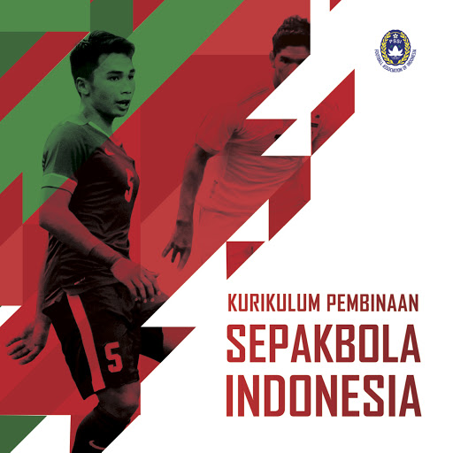

Filosofi Sepak Bola Indonesia
#KitaGaruda
Filosofi Sepak Bola Indonesia
Untuk memanfaatkan potensi yang besar dari sepak bola, PSSI telah merumuskan Filosofi Sepak Bola Indonesia (Filanesia) yang dituangkan dalam buku Kurikulum Pembinaan Sepakbola Indonesia. Filanesia adalah sebuah filosofi yang akan menjadi fondasi dan karakter sepak bola Indonesia, baik untuk pembinaan usia dini sampai profesional dari segi individu maupun tim.
Filosofi ini telah menjadi salah satu perhatian khusus kepengurusan PSSI periode 2016-2020. Di bawah komando Direktur Teknik PSSI Danurwindo, langkah awal pembentukan filosofi ini dilakukan sejak awal tahun 2017 di mana gaya sepak bola khas Indonesia ini sudah menjalani studi, praktek lapangan, diskusi panel, dan seminar dengan seluruh pelatih Liga 1, praktisi olahraga, dan .personel teknis lainnya.
Filosofi ini akan memberikan panduan dalam hal lingkup sepak bola, seperti penjenjangan latihan berdasarkan usia, pengembangan teknik pemain, dan ciri-ciri bermain di lapangan. Perlu dicatat bahwa Kurikulum Pembinaan Sepak Bola Indonesia ini bukan untuk menyeragamkan taktik setiap klub, namun ini akan menjadi ciri pemain Indonesia di pentas Internasional.
Lebih dalam, di dalam buku ini dikelompokkan beberapa fase latihan berdasarkan kelompok umur. Untuk anak-anak usia 6 sampai 9 tahun disebut sebagai fase pengenalan, lalu fase pengembangan skill di rentang usia 10 sampai 13 tahun, lalu terakhir ada rentang usia 14 sampai 17 tahun yang merupakan fase permainan.

Peluncuran resmi Filosofi Sepak Bola Indonesia dilakukan pada 9 November 2017 di Jakarta.
Dipersilakan bagi anda untuk mengunduh secara gratis melalui tautan di bawah dan memperbanyak serta menyebarluaskan untuk tujuan kemajuan sepakbola Indonesia.